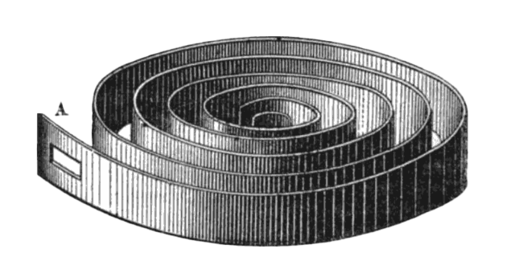
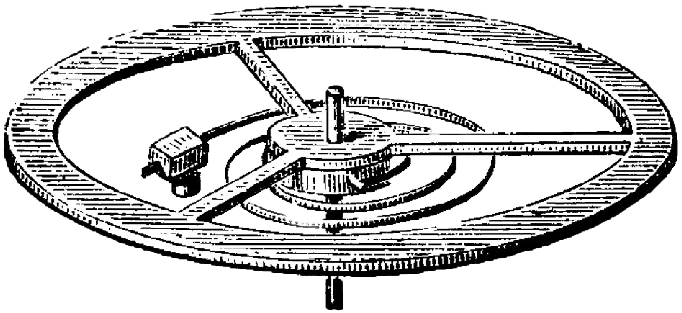
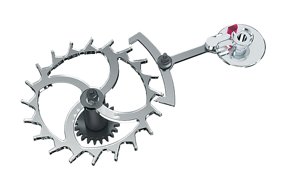
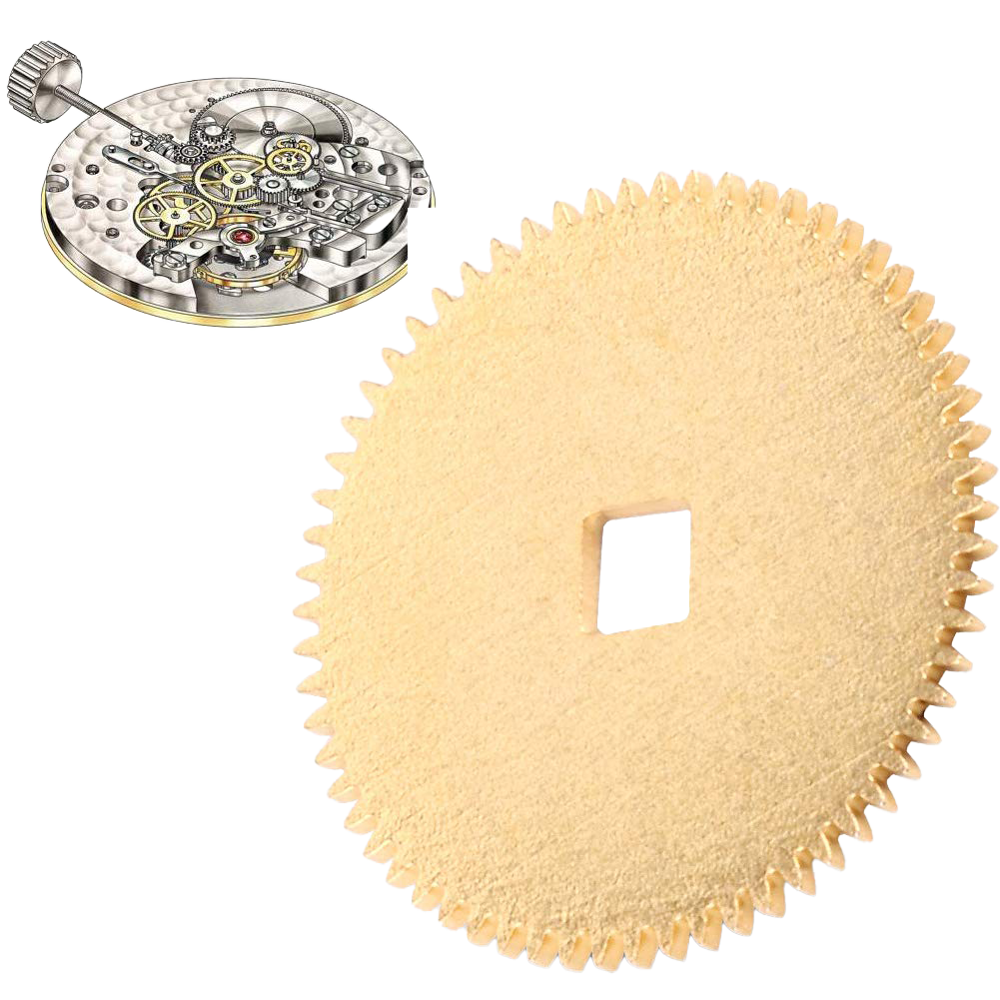
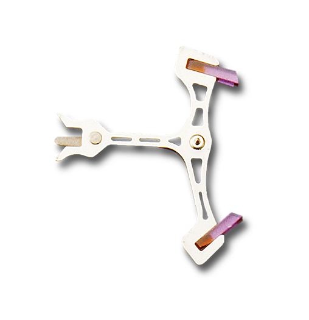
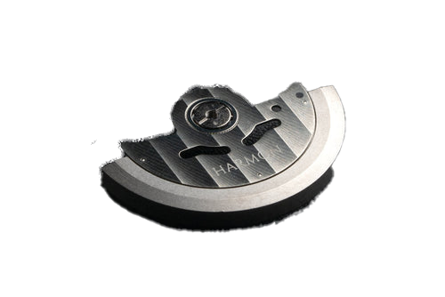

A mainspring is a coiled spring in a mechanical watch that provides the energy to power the movement. When the mainspring is wound by turning the watch's crown, it stores potential energy. As the mainspring unwinds, the energy is released, which drives the gear train and ultimately powers the watch's hands and complications. The length and strength of the mainspring determine the amount of power available to the movement, which affects the accuracy and duration of the
watch's operation.

The balance wheel and hairspring are important components of a mechanical watch's regulating system. The balance wheel is a wheel with a weighted rim that oscillates back and forth at a constant rate, while the hairspring is a fine, spiral-shaped spring that is attached to the balance wheel and controls its oscillations. The balance wheel and hairspring work together to regulate the movement of the watch's gears and hands, ensuring accurate timekeeping. When the balance wheel swings in one direction, it compresses the hairspring, storing energy that is released when the wheel swings back in the other direction.
The hairspring then helps to control the speed at which the balance wheel oscillates, resulting in precise timekeeping.

An escapement wheel is a component of a mechanical watch that regulates the movement of the watch's gears, controlling the release of energy from the watch's mainspring and enabling the watch to keep time accurately. It works by allowing the gears to move in small, precise increments, controlled by a mechanism that locks and unlocks the gears at regular intervals, usually by means of a pallet fork and an escape wheel. This creates a periodic ticking sound and ensures that the watch's hands move forward at a consistent rate.

The ratchet wheel is a component of a watch movement that plays an important role in winding the watch's mainspring. It is a toothed wheel that is connected to the barrel arbor, which holds the mainspring. When the crown is turned to wind the mainspring, the ratchet wheel turns in one direction only, driven by a small pawl or click that engages with the teeth of the wheel. The ratchet wheel is designed with a one-way clutch that prevents the mainspring from unwinding when the watch is in use. The wheel also typically features a small screw or other mechanism that can be used to adjust the tension of the mainspring and fine-tune the watch's accuracy.

The pallet fork is a component of a mechanical watch movement that plays a key role in regulating the movement of the watch. It is a small lever that pivots back and forth between two jewel bearings, interacting with the escape wheel to control the movement of the balance wheel. As the escape wheel turns, it pushes against the pallet fork, causing it to oscillate back and forth. This action locks and unlocks the escape wheel's teeth, controlling the release of energy from the mainspring and allowing the balance wheel to oscillate at a constant rate. The pallet fork is typically made of a lightweight, low-friction material such as steel or titanium, and is carefully engineered and finished to ensure precise and reliable operation.

A rotor in a watch movement is a key component in automatic or self-winding mechanical watches. It is a semi-circular or oscillating weight that pivots around an axis in response to the wearer's wrist movements. As the rotor swings back and forth, it winds the mainspring, which stores the energy required to power the watch. This automatic winding mechanism eliminates the need for manual winding, ensuring that the watch remains wound and accurate as long as it's worn regularly. Rotors are typically made of metal, with some featuring additional decorative elements, and are designed to be efficient and reliable while maintaining a slim profile to fit within the watch case.